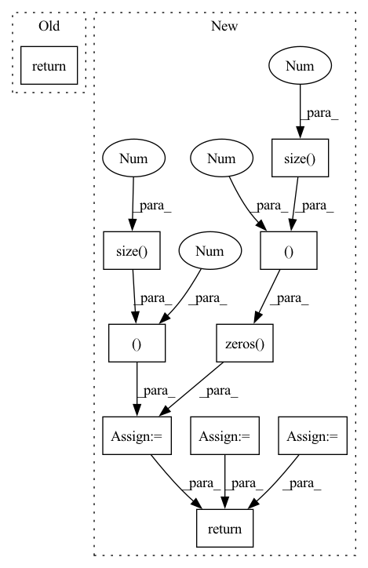

Pattern ID :12056

Before Change
trans_loss_t, domain_acc_t = self._single_domain_forward(g_t, f_t, domain=0)
self.grl.step()
self.domain_discriminator_accuracy = 0.5 * (domain_acc_s + domain_acc_t)
return 0.5 * (trans_loss_s + trans_loss_t)
def _single_domain_forward(self, logits, features, domain=1):
Perform forward on a single domain.
After Change
f = torch.cat((f_s, f_t), dim=0)
g = torch.cat((g_s, g_t), dim=0)
g = F.softmax(g,dim=1).detach()
h = self.grl(self.map(f, g))
d = self.domain_discriminator(h)
d_label = torch.cat((
torch.ones((g_s.size(0), 1)).to(g_s.device),
torch.zeros((g_t.size(0), 1)).to(g_t.device),
))
weight = 1.0 + torch.exp(-entropy(g))
batch_size = f.size(0)
weight = weight / torch.sum(weight) * batch_size
self.domain_discriminator_accuracy = binary_accuracy(d, d_label)
return self.bce(d, d_label, weight.view_as(d))
class RandomizedMultiLinearMap(nn.Module):
In pattern: SUPERPATTERN
Frequency: 3
Non-data size: 10
Instances
Fragment ID: 40747901
Project Name: thuml/transfer-learning-library
Commit Name: 6dfc8e293ca2cbc4d116dc8ed0a6ef176dff0d06
Time: 2020-04-12
Author: 13126830206@163.com
File Name: dalib/adaptation/cdan.py
M Class Name: ConditionalDomainAdversarialLoss
N Class Name: ConditionalDomainAdversarialLoss
M Method Name: forward(5)
N Method Name: forward(5)
M Parent Class: nn.Module
N Parent Class: nn.Module
M File Name: dalib/adaptation/cdan.py
N File Name: dalib/adaptation/cdan.py
M Start Line: 86
M End Line: 90
N Start Line: 87
N End Line: 100
'>
Before Change
trans_loss_t, domain_acc_t = self._single_domain_forward(g_t, f_t, domain=0)
self.grl.step()
self.domain_discriminator_accuracy = 0.5 * (domain_acc_s + domain_acc_t)
return 0.5 * (trans_loss_s + trans_loss_t)
def _single_domain_forward(self, logits, features, domain=1):
Perform forward on a single domain.
After Change
def forward(self, g_s, f_s, g_t, f_t):
f = torch.cat((f_s, f_t), dim=0)
g = torch.cat((g_s, g_t), dim=0)
g = F.softmax(g,dim=1).detach()
h = self.grl(self.map(f, g))
d = self.domain_discriminator(h)
d_label = torch.cat((
torch.ones((g_s.size(0), 1)).to(g_s.device),
torch.zeros((g_t.size(0), 1)).to(g_t.device),
))
weight = 1.0 + torch.exp(-entropy(g))
batch_size = f.size(0)
weight = weight / torch.sum(weight) * batch_size
self.domain_discriminator_accuracy = binary_accuracy(d, d_label)
return self.bce(d, d_label, weight.view_as(d))
class RandomizedMultiLinearMap(nn.Module):
'>
Fragment ID: 40747903
Project Name: thuml/transfer-learning-library
Commit Name: 8477111b23336e7dd2d349a4b35b969240ff5871
Time: 2020-04-12
Author: 13126830206@163.com
File Name: dalib/adaptation/cdan.py
M Class Name: ConditionalDomainAdversarialLoss
N Class Name: ConditionalDomainAdversarialLoss
M Method Name: forward(5)
N Method Name: forward(5)
M Parent Class: nn.Module
N Parent Class: nn.Module
M File Name: dalib/adaptation/cdan.py
N File Name: dalib/adaptation/cdan.py
M Start Line: 86
M End Line: 90
N Start Line: 87
N End Line: 100
'>
Before Change
returns = values + advantages
advantages = (advantages - advantages.mean()) / (advantages.std() + 1e-10)
return advantages, returns
After Change
trans_shape_func = lambda x: x.reshape(trajectory_length, -1, 1)
rewards = trans_shape_func(rewards) // [trajectory length, parallel size, 1]
masks = trans_shape_func(masks) // [trajectory length, parallel size, 1]
values = trans_shape_func(values) // [trajectory length, parallel size, 1]
deltas = FLOAT(rewards.size()).to(device)
advantages = FLOAT(rewards.size()).to(device)
// calculate advantages in parallel
prev_value = torch.zeros((rewards.size(1), 1), device=device)
prev_advantage = torch.zeros((rewards.size(1), 1), device=device)
for i in reversed(range(rewards.size(0))):
deltas[i, ...] = rewards[i, ...] + gamma * prev_value * masks[i, ...] - values[i, ...]
advantages[i, ...] = deltas[i, ...] + gamma * tau * prev_advantage * masks[i, ...]
prev_value = values[i, ...]
prev_advantage = advantages[i, ...]
returns = values + advantages
advantages = (advantages - advantages.mean()) / (advantages.std() + 1e-10)
// reverse shape for ppo
return advantages.reshape(-1, 1), returns.reshape(-1, 1) // [trajectory length * parallel size, 1]
'>
Fragment ID: 40747946
Project Name: ritchiehuang/magail
Commit Name: 5f42babd1531e53f4852cdcb2ac2959f63b719e4
Time: 2020-04-24
Author: ritchie-huang@outlook.com
File Name: algos/GAE.py
M Class Name: AnonimousClass
N Class Name: AnonimousClass
M Method Name: estimate_advantages(6)
N Method Name: estimate_advantages(5)
M Parent Class:
N Parent Class:
M File Name: algos/GAE.py
N File Name: algos/GAE.py
M Start Line: 7
M End Line: 22
N Start Line: 32
N End Line: 66